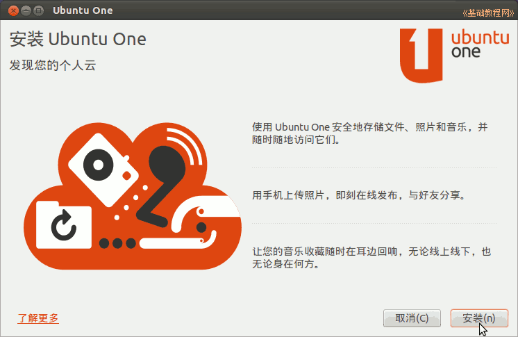
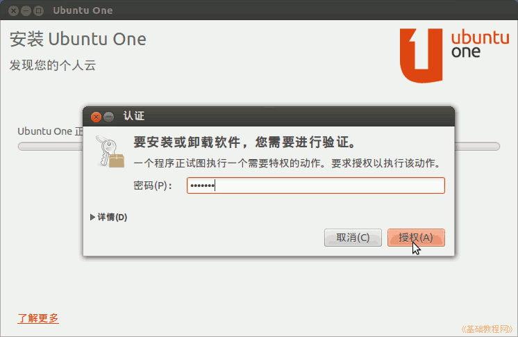
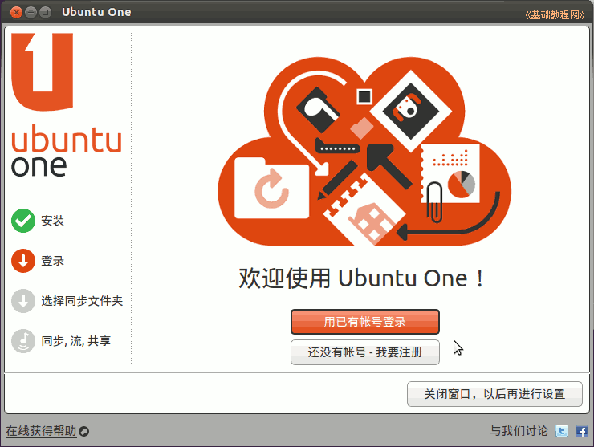
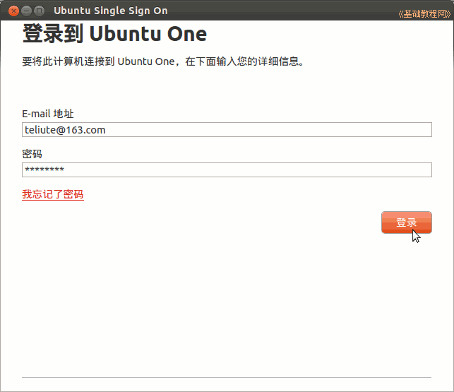
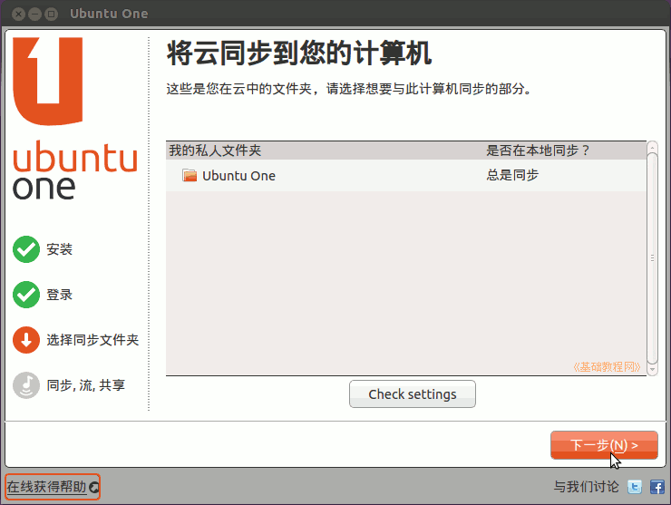
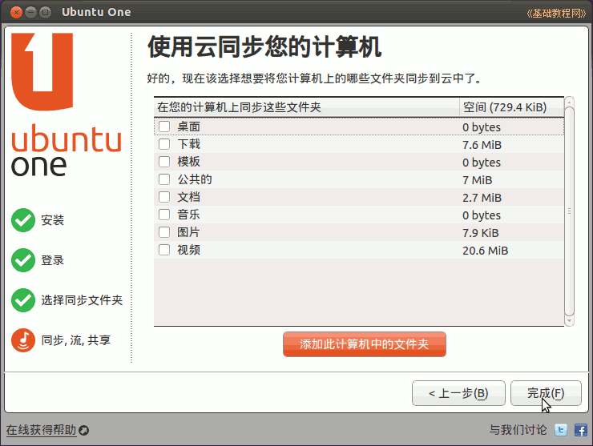
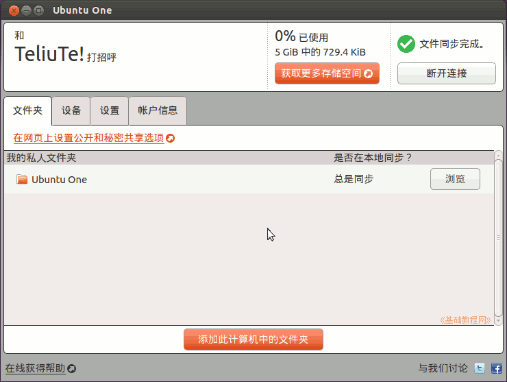
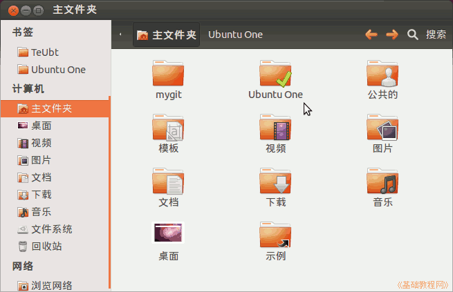
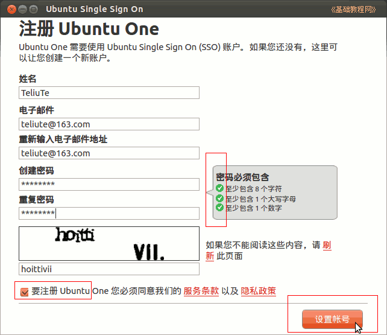

Ubuntu 入门操作指南
作者：TeliuTe 来源：基础教程网
十一、Ubuntu One 返回目录 下一课Ubuntu One 是一个云存储服务器，可以将自己的文件保存到远端服务器上；
1、Ubuntu One
1）点击左侧栏的带 U 的图标，打开 Ubuntu One 对话框；

2）第一次会出来的面板中，点右下角的“安装”，稍等出来一个认证框，输入自己的密码，开始安装；

3）稍等出来登录对话框，需要一个登录账号，如果没有就点下边的“我要注册”，按提示操作即可；

4）点“用已有的帐号登录”，在出来输入自己的邮箱地址、密码，然后点登录；

5）稍等出来自动同步的云文件夹，点“下一步”继续；

6）接下来选择其他要同步的文件夹，直接点“完成”；

7）然后显示当前的云文件夹状态，还可以进行各项设置，如果不想连接到云上，可以点右上角的“断开连接”；

8）每次把要同步的文件复制到自己主文件夹中的 Ubuntu One 中即可，同步时将会在云上保留文件夹中最近的一次操作版本；

9）如果没有账号，就点“我要注册”，按提示输入各项信息，然后点下边的“设置账号”；

本节学习了 Ubuntu One 的基础知识，如果你成功地完成了练习，请继续学习下一课内容；
本教程由86团学校TeliuTe制作|著作权所有
基础教程网：http://teliute.org/
美丽的校园……
转载和引用本站内容，请保留版权信息和本站链接。